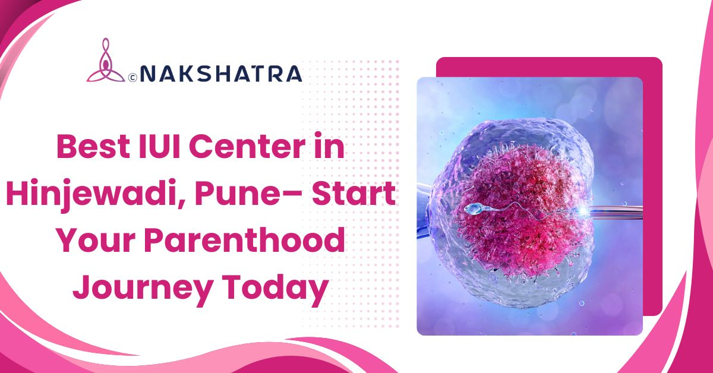

Best IUI Center in Hinjewadi, Pune - Start Your Parenthood Journey Today
Looking for the best IUI center in Hinjewadi, Pune, with high success rates and affordable treatment? You are not alone. Thousands of couples take this step every year, and with the right fertility experts by your side, your chances of starting a family can improve significantly.

Accessible for couples from Hinjewadi, Wakad, Baner and nearby Pune areas
Book Free Consultation
Meet Dr. Ramit Raosaheb Kamate
MBBS, DNB, DGO, FRM (UK)
Dr. Ramit Kamate is a Reproductive Medicine Consultant and Sexologist with over 12 years of experience. He specialises in sexual medicine for men and women, fertility treatment, pre- and post-delivery care, normal vaginal delivery (NVD), tubectomy/tubal ligation, natural cycle IVF, and MTP.
Dr. Kamate completed his MBBS from B.J. Medical College, Pune, and pursued a Master's in Reproductive Medicine from Hamilton University, UK, and IBCME Dubai. He also holds a Fellowship in Cosmetic Gynaecology and Sexual Medicine from the USA.
Schedule Consultation
Book appointment today!
Scheduling your visit is quick and easy. Connect with our team today and take the first step toward personalised IUI care.

Why choose Nakshatra for IUI near Hinjewadi?
IUI is a timing-sensitive treatment. Nakshatra Clinic supports each couple with careful evaluation, ovulation tracking, laboratory sperm preparation and post-procedure guidance.
Minimally Invasive
A quick, generally painless procedure where prepared sperm is placed directly into the uterus at the right time.
Personalised Plans
Treatment is planned around your fertility profile, age, cycle response and diagnostic findings.
Ovulation Tracking
Ultrasound imaging and hormone tracking help identify the ideal treatment window.
IUI treatment support we offer
Every couple's journey is unique. These IUI-focused services support diagnosis, timing, procedure planning and follow-up care.
Fertility Consultation
Your journey begins with a warm, one-on-one consultation where we listen to your concerns, review your medical history and recommend the right treatment with clarity.
Fertility Testing & Diagnosis
Accurate treatment starts with accurate diagnosis, including fertility testing for both partners, hormone analysis, semen testing and tailored planning.
Ovulation Monitoring
Timing is critical in IUI. We monitor your ovulation cycle using ultrasound imaging and hormone tracking to identify the ideal procedure window.
Sperm Preparation
We carefully prepare the sperm sample in our laboratory, selecting the healthiest and most motile sperm for the IUI procedure.
IUI Procedure
The IUI procedure is quick, simple and generally painless. Prepared sperm is gently placed directly into the uterus at the optimal time.
Medication & Hormonal Support
Medications are carefully prescribed to stimulate ovulation when needed, with monitoring to keep the plan safe and aligned with your fertility goals.
Post-IUI Care & Guidance
Our support continues after the procedure with personalised care, lifestyle recommendations and emotional reassurance while you wait for results.
Personalised Fertility Plans
We design personalised IUI plans based on your health, age and fertility condition for a more comfortable, informed experience.
Step-by-step IUI procedure: what to expect
Starting fertility treatment can feel overwhelming, but knowing what to expect makes the journey easier. At our IUI center in Hinjewadi, Pune, we guide you through every step with care and clarity.
Step 1
Initial Consultation
Your journey begins with a friendly consultation where our fertility expert listens to your concerns and reviews your medical history. Basic diagnostic tests may be recommended to identify the underlying cause and create a personalised treatment plan.
Step 2
Ovulation Monitoring
We carefully track your ovulation cycle through ultrasound scans and, if needed, ovulation-inducing medications. Precise timing plays a major role in treatment planning.
Step 3
Sperm Preparation
On the day of the procedure, a sperm sample is collected and processed in our laboratory. The healthiest and most active sperm are selected for the IUI procedure.
Step 4
IUI Procedure
A thin, soft catheter is used to place the prepared sperm directly into the uterus. The procedure takes only a few minutes and is generally well-tolerated with minimal discomfort.
Step 5
Post-Treatment Care
After the procedure, you can return to your normal routine with minimal restrictions. Our team explains what to expect, when to take a pregnancy test and how to navigate the two-week waiting period.
Convenient IUI Center in Hinjewadi, Pune – serving nearby locations
Nakshatra Clinic is easily accessible to patients across Hinjewadi, Pune and nearby regions. We regularly serve couples from the areas below.
What patients share about fertility care
"Finally Found Hope Here"
After struggling for years, we finally found hope here. The doctors explained everything clearly and guided us at every step. The care and support we received made a huge difference, and today we are blessed with a baby.
"Felt Comfortable & Confident Throughout"
I was very anxious before starting treatment, but the entire team made me feel comfortable and confident. The process was smooth, and I always felt supported.
"Best Decision We Ever Made"
Choosing this clinic was the best decision we ever made. The team is highly professional and compassionate. They gave us the right advice at the right time.
"Excellent Experience from Start to Finish"
The experience was excellent from start to finish. The staff was friendly, and the doctors were highly knowledgeable. I felt safe and well cared for throughout my treatment.
"We Are Now Proud & Happy Parents"
We had almost given up hope before coming here. The personalised approach and attention to detail truly impressed us. Today, we are proud and happy parents.
"The Team Addressed Both of Us Equally"
As a couple, we had many doubts and fears going in. The team addressed both of us equally, and the environment was very positive and reassuring.
Curious About IUI? Let's Talk.
IUI treatment guidance designed to support you every step of the way.
IUI is a quick and generally painless procedure that takes only a few minutes. At Nakshatra Clinic, Dr. Ramit Raosaheb Kamate - with over 12 years of experience - performs the procedure with exceptional care and precision, ensuring minimal discomfort and a stress-free experience for every patient.
IUI is a safe and well-tolerated procedure. Some patients may experience mild cramping or slight spotting, which typically resolves quickly. At Nakshatra Clinic, we follow strict medical protocols and hygiene standards to minimise any potential side effects and ensure patient safety throughout the treatment process.
The right choice depends on your specific fertility condition, age, and medical history. IUI is generally recommended for mild infertility issues, as it is less invasive and more affordable. IVF is typically preferred for complex cases or when other treatments have not been successful. A thorough fertility evaluation at our clinic will help determine the most suitable and effective option for you.
When selecting a fertility clinic, consider the doctor's experience, success rates, technology used, and patient reviews. Nakshatra Clinic stands out with expert care from Dr. Ramit Kamate, advanced diagnostic technology, and a personalised treatment approach, making it one of the most trusted fertility clinics in Hinjewadi, Pune.
Yes, IUI can be an effective option for women with PCOS when ovulation is properly managed. At Nakshatra Clinic, we use targeted medications and careful monitoring to regulate ovulation and improve fertility outcomes, making IUI a viable treatment path for many PCOS patients.
IUI tends to be most effective for women under the age of 35, but it may still be a suitable option for older women depending on their individual health and fertility profile. Our team evaluates each patient thoroughly to recommend the most appropriate treatment plan.
Success rates for IUI vary based on factors such as age, overall health, and the underlying cause of infertility. At Nakshatra Clinic, we combine expert clinical guidance, precise ovulation tracking, and personalised care to maximise each couple's chances of achieving a successful pregnancy.
Before starting IUI, your doctor will conduct a full fertility assessment for both partners. You may be advised to make certain lifestyle adjustments, follow specific dietary recommendations, and avoid smoking or alcohol. Our team will provide complete pre-treatment guidance tailored to your individual needs.
Start your IUI consultation today
Connect with Nakshatra Clinic for IUI treatment guidance near Hinjewadi, Pune.